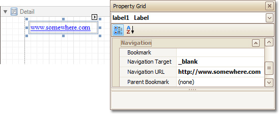

Create Hyperlinks
This tutorial demonstrates how to embed a hyperlink into your report.
Note that a label will behave as a hyperlink both in a report's Print preview, HTML preview and when the report is exported to PDF, HTML, MHT, RTF, XLS and XLSX formats.
To insert a hyperlink into your report, do the following.
- Create a new report.
Drop a Label onto the report, and in the Property Grid, change its Text to the one required for the link.

In addition, to make the Label look like a typical link, you can change its appearance appropriately (e.g. make it blue and underlined).
Now, set its Navigation Target to the required value (_blank, _parent, _search, _self, or _top), and define the required Navigation URL.

The hyperlink is now ready. Switch to the Preview Tab (or, HTML View Tab), and view the result.